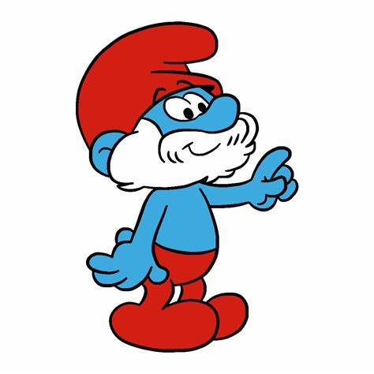

Papa Smurf is the wise and respected leader of the Smurfs;
Papa Smurf is one of the protagonists from the comic strip The Smurfs.
Most Smurfs are said to be about 100 years old, but at the advanced age of 546
(553 in the 1980s series episode "The Littlest Giant"), Papa is the oldest Smurf
and the leader of all Smurfs. Despite his age, he is still quite energetic.
Easily distinguishable from all the other Smurfs, Papa Smurf has a bushy white mustache
and beard and is typically dressed in red pants and a matching red Phrygian cap, making
him the only Smurf who does not wear white. He was introduced in Peyo's 1958 Johan and
Peewit story "La Flûte à Six Trous", the first appearance of the Smurfs.
Don Messick provided Papa Smurf's voice for the 1980s animated series as well as the
special Cartoon All-Stars to the Rescue. Jonathan Winters, who voiced Grandpa Smurf on the
animated series, was Papa Smurf's voice for the 2011 film and its 2013 sequel, with the
latter being Winters' last film before his death.[4] On The Smurfs: A Christmas Carol and
The Smurfs: The Legend of Smurfy Hollow, Papa Smurf is voiced by Jack Angel.[5] Mandy
Patinkin voiced Papa Smurf in the animated film Smurfs: The Lost Village.[6] Davis Freeman
currently voices Papa Smurf in the 2021 Smurfs reboot. In the original French version,
Papa Smurf's name is "Le Grand Schtroumpf” which means "the Great Smurf" or "the Big Smurf."
History;
Papa Smurf debuted in 1958 and is a gentle, humble, and knowledgeable village elder. As the
Smurfs' leader, Papa is a central father figure that the Smurfs typically go to when seeking
counsel. Due to his fatherly nature, Papa Smurf is always concerned about the Smurfs’ welfare
and harmony. He is very altruistic and is always available to help anybody, whether Smurf or
human.
His great diplomatic skills are used when encountering humans or other creatures in the
forest.In the original comic books by Peyo, Papa Smurf has a much more forceful personality
than in other portrayals. He is often portrayed in these comics as a cantankerous and irritable
leader. In these comics, Papa has little patience and becomes easily angry with the Smurfs for
being disobedient or making mistakes. However, in the 1981 series, he is a calm leader.
Papa Smurf's duty is to ensure that all the Smurfs of the village get along and respect each
other. When real chaos arises, Papa Smurf usually resorts to drastic measures, often through
the use of magic. For example, Papa switched bodies with the antagonist Gargamel in order to
pretend to attack the village ("Smurf Versus Smurf" comic adventure/"Romeo and Smurfette"
TV episode). In another instance, he creates an entire village full of evil doubles of the
original Smurfs ("The Smurf Menace" issue).
While Papa Smurf sometimes prefers to not have to constantly fix problems, he realizes that
it is his calling. He once said that since he may not be able to be the village leader forever,
every Smurf should have a brief experience of commanding the village. To do so, Papa handed
over his signature red hat, allowing each Smurf the chance to direct others on a construction
project. The Smurfs were then referred to as "Papa Greedy", "Papa Clumsy" or "Mama Smurfette,"
depending on whose turn it was to be the village leader.[when?][where?] While Papa did see the
importance of each Smurf gaining leadership skills, his true purpose was to guide the Smurfs and
help fix their problems and mistakes.
When he is not actively acting as the leader or helping other Smurfs, Papa Smurf indulges in his
favorite hobby: magical chemistry, or alchemy. He often makes elixirs to help Smurfs who get into
trouble. The Belgian comic portrays Papa Smurf constantly preparing magical drinks from white hellebore.
The drawings that portray the effects of these alchemical brews are shown as both turbulent and amusing.
Aside from his house, he also has a laboratory containing several chemical devices. Papa Smurf often tries
to create potions to help the Smurfs but sometimes fails; such as the time he accidentally created a
substance that turned any living thing into a huge monster (see the album: The Smurfs and the Cracoucass
and the cartoon episode "The Smurfs and the Howlibird"). He occasionally leaves the village in order to
obtain the necessary ingredients for his potions.
Voice actors
Richard Muller (1961-1969, The Smurfs)
Bill Owen (1979; The Smurfs and the Magic Flute)
Don Messick (1981–1990; The Smurfs, Cartoon All-Stars to the Rescue)
Bill Capizzi/Michael Sorich (1983; The Smurfs and the Magic Flute)
Jack Angel (2011–2013; The Smurfs Dance Party', The Smurfs: A Christmas Carol, The Smurfs: The Legend of Smurfy Hollow)
Jonathan Winters (The Smurfs, The Smurfs 2)
Mandy Patinkin (Smurfs: The Lost Village, 2017)
Scott Innes (briefly)[7]
Davis Freeman (Smurfs Reboot)
John Goodman (Smurfs)